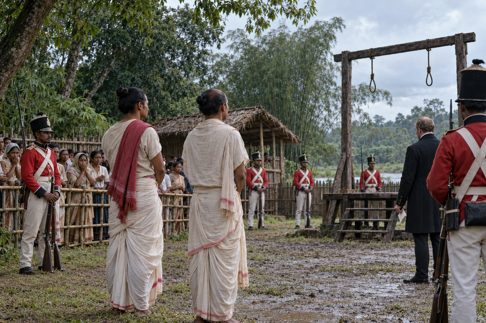

Piyali Phukan and Jiuram Dulia Baruah Hanged
1830 · The last Swargadeo

A plot to drive the British out and restore Ahom rule is uncovered. Piyali Phukan, son of Badan Chandra Borphukan, and Jiuram Dulia Baruah are hanged.
Sources differ on the day and place (August or 23 September 1830; Sivasagar or Jorhat) and on Jiuram's name (Dulia Baruah or Medhi). Depicts the moments before the 1830 execution, not the hanging itself. Not Piyali Barua and Maniram Dewan’s 1858 execution; Badan Chandra is absent.
Sources
People: Badan Chandra Borphukan
Open this scene in the interactive archive · Follow this event on MAP